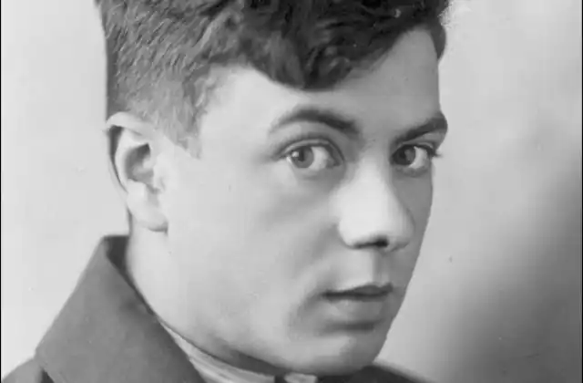
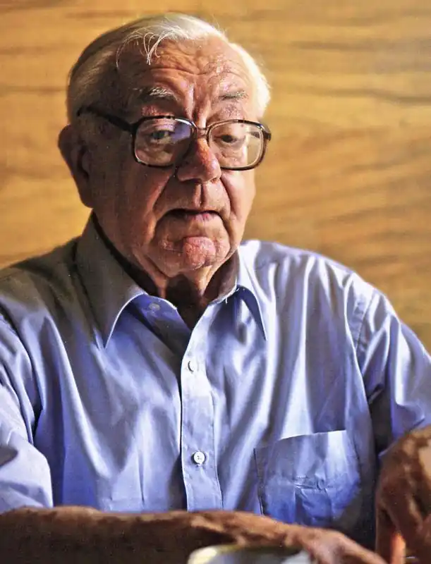

Святослав ГОРДИНСЬКИЙ
Йому пощастило народитися в Коломиї, а не, скажімо, в Конотопі чи в Жмеринці. Тому його дитинство було серед українських книг та видатних українських людей. У Коломиї (сьогодні в це просто важко повірити) виходила тоді ціла низка газет і було кілька видавництв. Тодішня Коломия – маленька українська столиця на противагу нужденним малоросійським провінціям на взір Конотопа чи Жмеринки.
Його батько – Ярослав Гординський – був знаним літературознавцем і педагогом, і в їхньому домі збиралася галицька еліта. Звичайно ж, Гординський дав синові добру гімназіальну освіту. На той час родина вже переїхала до Львова, де Гординський-молодший паралельно з гімназією відвідував малярську школу Олекси Новаківського, що забезпечило йому і добру мистецьку освіту. Далі був Берлін, де юнак мав студії у відомого візантолога В. Залозецького. По тому – Париж, навчання в Академії Жуліана, де за чотири десятиліття до нього опановувала секрети живопису Марія Башкирцева. Була в його біографії і академія всесвітньовідомого кубіста Фернана Леже. Все, що можна було взнати й вивчити в Парижі, який мав славу Мекки мистецтв, Гординський узнав і вивчив. Він не поповнив лави космополітичного племені паризьких художників, які народилися в різних кінцях світу й, мов метелики на вогонь, злетілися сюди, щоб – зчаста! – бідувати тут і марити славою, або вхопити птаху щастя за хвіст, як Пабло Пікассо чи Сальвадор Далі, або ж дочасно згаснути в невідомості, витративши всі свої сили на битву за місце під сонцем. Гординський повернувся додому, де став ініціатором заснування Асоціації незалежних українських митців (АНУМ), до складу якої ввійшли Ковжун, Музика й Осінчук. Гординський став редактором журналу "Мистецтво", що його видавала АНУМ. А водночас редагував разом із Михайлом Рудницьким літературний часопис "Назустріч". І це не випадково, бо він уже тоді був знаним не тільки як художник, а і як поет. Здається, сама наша історія поклала тоді на Львів, як і на Прагу, таку важливу місію, висунувши їх на роль українських культурних столиць. Потужні літературні сили в чеській столиці склали так звану Празьку школу поетів, що спалахнула цілим гроном першорядних творчих індивідуальностей. У той час, коли в Радянській Україні один за одним зникали і з літератури, і з життя діячі української культури, тут був український Ренесанс. До Львова приходили страшні звістки: застрелилися Хвильовий і Скрипник, заарештовано Плужника, Зерова, Драй-Хмару, Филиповича, Підмогильного, Куліша, Курбаса, розстріляно Влизька, Косинку, Буревія, батька й синів Крушельницьких (ще недавно ці захоплені радянофіли вибиралися зі Львова на велику Україну)... Вже немає там літературних угруповань "ВАПЛІТЕ", "МАРСу", "Нової генерації", неокласиків, "Плуга", між якими велася гаряча творча конкуренція, що народжувала благодатний дух змагальності, такий необхідний для нормального розвитку літератури. Після тотального розгрому всіх уцілілих зігнано до єдиної Спілки письменників, що вельми нагадувало п’ять років тому утворені колгоспи, – в такий спосіб їх значно легше контролювати й простіше ними управляти. У Львові, мов пори року, змінюються літературні моди і погоди. Найбільше зазнає таких змін поезія. На очах стають історією "Молода муза", стрілецькі поети, "Митуса", тепер уже живими анахронізмами оголошено Б. Лепкого, В. Карманського, Уляну Кравченко, В. Пачовського. Молодий категоричний критик Микола Гнатишак, віддавши належне сивоголовим жерцям поетичної музи, стверджує, що "замріяні старі панове" вже не скажуть у літературі нового слова – все, що вони могли сказати, вони вже сказали. Усі його сподівання пов’язані з молодими, серед яких творчо найперспективнішими він називає Антонича, Завадовича, Кабарівського, братів Курдидиків, Лопушанського, Ярого, Кравцева, Кедро й Гординського. Їхня поезія – це "наставлення антисуб’єктивістичне, асентиментальне, волюнтаристично-бойове, життєрадісне". Як показав час, великій літературі з-поміж них належало три імені: Антонич, Кравців і Гординський. Решта ж десь розгубилися на підступах до неї. Отже, три нестандартні творчі індивідуальності, які жили передчуттям свого яскравого майбутнього. Три різних напрямки, три різних школи. Характерно, що кожен із них не є щось окремішнє, замкнене в самому собі, львівсько чи галицько локальне. Всі троє поетів тісно пов’язані з загальноукраїнськими літературними традиціями – їм близькі неокласики, Микола Бажан, Юрій Яновський, Олекса Влизько. В упорядкованій Романом Лубківським книзі Гординського "На переломі епох" (Львів, вид-во "Світ", 2004) вміщено низку його рецензій на книги українських письменників. У полі його зору твори Микола Зерова, Миколи Хвильового, Леоніда Чернова-Малошийченка, Олега Ольжича, Євгена Маланюка, Юрія Липи, Леоніда Мосендза, Олени Теліги... – це справді активна й поважна праця навіть і для "професійного" критика, який не був би художником, мистецтвознавцем, поетом і перекладачем. До речі, поточне рецензування, огляди й статті не зникли з його біографії і після еміграції до США. З усього масиву тамтешніх текстів у нещодавньому львівському виданні представлено написані вже в п’ятдесяті роки статті про Едварда Стріху (Костя Буревія), Михайла Ореста, Михайла Рудницького, Миколу Куліша, Юрія Косача, Остапа Тарнавського... Годі все це перелічити, враховуючи те, що чимало публікацій різних літ – особливо ж короткі рецензії та бібліографічні коментарі – до книжки "На переломі епох" просто не потрапили. Лишається загадкою, як цей богемний чоловік, що не цурався розваг у товаристві, редагував два часописи, писав картини, поезії, мистецтвознавчі студії, перекладав, як він міг усе те встигати?! Окидаючи оком усю його тодішню творчу спадщину, навіть починаєш замислюватися: а чи не мав він роботящих літературних "негрів", кожен із яких спеціалізувався б чи то на поетичному перекладі, чи то на поточному рецензуванні?.. Ні, не мав чоловік ніяких "негрів". Він мав енергію Святослава Гординського. Мав пожадливу зацікавленість усіма гранями творчості. І завжди мав що сказати. Переважну більшість написаного тоді справді цікаво читати й сьогодні. Окрім влучних спостережень і характеристик того чи того літературного явища, він часто, можливо, навіть сам того не помічаючи, характеризує і себе. Він незрідка звертав увагу в тексті чи біографії автора на те, що передовсім цікавило його чи було характерним і для нього. Окремі характеристики інших можна сприймати як автохарактеристики, автокоментарі. Скажімо, пишучи про Олексу Влизька, якого він воскресив для читача, впорядкувавши й видавши 1942 року у Львові том його поезій, Гординський наголошує, що Влизькова поезія "яскрава, динамічна, емоційно наладована, позначена великою культурою і винахідливістю віршової форми, свідчить про те, що автор ознайомлений з багатьма поетами західної літератури" – цими якостями відзначається і його, Гординського, творчість. Тут же йде перелік близьких і самому Гординському авторів. (До речі, цікава для біографій обох поетів подробиця. Коментуючи один із віршів Влизькових "Матеріалів до епопеї", Гординський пише: "Десь наприкінці 1931 року Влизько передав мені з Харкова до Львова через співака М. Голинського примірник "Живу, працюю", що зберігся в мене й досі...". Отже, вони мали бодай уривчасті, бодай епізодичні творчі контакти, незважаючи на кордонні мури, якими совдепія відгородилася від усього світу. І, можливо, саме цю книжку Влизька брав у Гординського читати Антонич – Орест Зілинський наполягав, що саме Влизько інспірував Антоничеву "Зелену елегію"...) Гординський багато зробив як організатор видавничого життя у Львові під час Другої світової війни. Завдяки йому з’явилися друком десятки книг репресованих письменників. "Українське видавництво" оприлюднило і твори тоді прибулих до Львова Осьмачки, Любченка, Багряного. І в цьому також не остання заслуга літературно-мистецького редактора Святослава Гординського. Того, на кому, власне, й трималося все видавництво. Але повертаємося до поета Гординського. В одному з віршів його першої збірки читаємо такий "автопортрет" Гординського: Мабуть, не модний я. Що ж – я такий, як є. Звичайно, не такий, щоб гостроту тематик Міняти на ніжний, ліричний тріолет, Проціджений ситцем на напій ароматний. – Одного лиш боюсь: впадати в трафарет. Аж надто в нас кому затуплювати пера! Я хочу, щоб кохав однаково поет І буревій доби, і квіти, й хмародера... Та найважніше, щоб, зриваючись у лет, Мав кришечку бодай фантазії Бодлера! Як бачимо, Гординський прагне охопити буквально все. Його "Барви й лінії", що з’явилися 1933-го (йому тоді було двадцять сім років), відкрили поета широких тематичних зацікавлень, як це він і артикулює в зацитованих попереду рядках. Таким він і лишився в своїй поезії – у нього не було якоїсь однієї улюбленої теми, улюбленого мотиву. Сучасний літературознавець пише через шість з половиною десятиліть після з’яви дебютної збірки Гординського, що в ній "смілива асоціативність притлумлювала її стильову еклектику, де нагромаджувалися романтизовані елементи футуризму, "неокласицизму" та неоромантизму...". Гординському все однаково близьке: далека Еллада, західна культура різних часів та український світ. У цьому розумінні він поет – принаймні, як для української літератури – винятково багатогранний і багатоликий. Не випадково ж упорядники відомої поетичної антології "Координати" Богдани Бойчук та Рубчак порівнюють його з португальцем Фернандо Песоа – здається, за ним стоїть цілий колектив різних літературних індивідуальностей. Гординський створює враження не одного, а кількох авторів різних літературних шкіл і різного культурного досвіду. У нього також стільки формальних облич, скільки тематичних. Він справді зовсім інший у кожному тематичному матеріалі. Скажімо, звертаючись до свого улюбленого еллінського матеріалу, стає суголосний неокласикам. Та й не тільки в цьому матеріалі. (Автори-упорядники "Координатів" спостерегли виразні перегуки між Филиповичевим "Мономахом" і "Холмом" Гординського, а також поміж раннім Рильським і поемою Гординського "Сновидів"). У нього з’являється витонченість справжнього "парнасця".